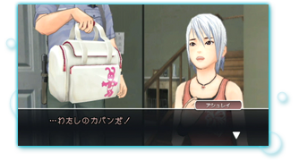

―― |
ずっと気になっていたのですが、アシュレイのカバンに描かれている「ピンキーラビット」は、 |
|
鈴木 |
シングの作っているゲームの世界は、実はどこかで繋がっているんです。「ピンキーラビット」はこの世界で1950年代に放映していたアニメのキャラクターで『ウィッシュルーム』（※）の主人公カイル・ハイドも見ていたし、アシュレイも再放送で見ていたかもしれない。ほかには『ウィッシュルーム』でケビンという医者が出てくるんですけど、ケビンが働いているロビンズ病院を経営しているのが、実はリチャードとジェシカのお父さんだったりします。 |
 |
金崎 |
とある家の地下に飾ってある写真なんかも、繋がりを感じさせるものがあるかと思います。 |
―― |
Ｗｉｉで『アナザーコード：R』をやってから、DSの『アナザーコード』や『ウィッシュルーム』をやってみるというのも面白そうですね。 |
DSソフト『アナザーコード ２つの記憶』 発売日：2005年2月24日 希望小売価格：4,800円（税込） 公式ページへ |
DSソフト『ウィッシュルーム 天使の記憶』 発売日：2007年1月25日 希望小売価格：4,800円（税込） 公式ページへ |